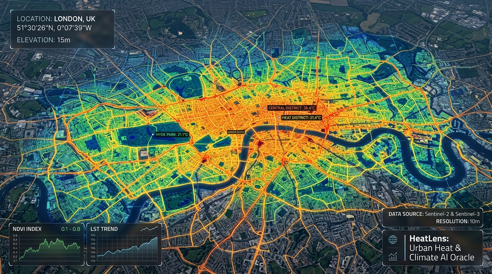
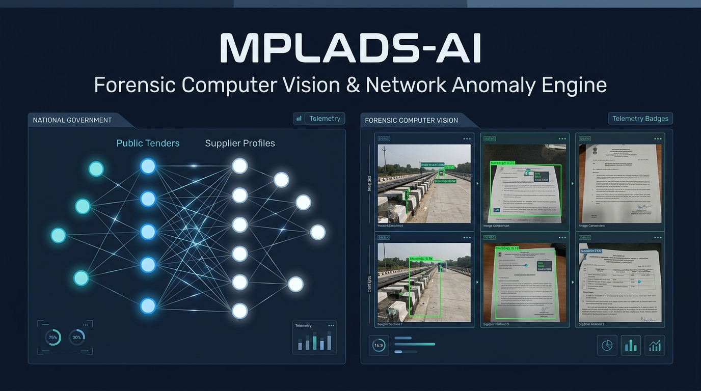

Undergraduate researcher and systems builder. I specialize in applying Computer Vision, Satellite Remote Sensing Physics, and Agentic LLM Architectures to solve structural civic transparency and climate inequality challenges.
// Academic Standing
institution: "ABESEC (AKTU)"
degree: "B.Tech CSE - AI & ML"
annual_ygpa: 8.79 / 10.0
cgpa: 8.8 / 10.0
// Active Research Stack
vision: ["OpenCV", "dHash", "ResNet"]
satellite: ["Landsat-8/9", "Sentinel-2", "GeoPandas"]
agentic: ["LangChain", "ChromaDB", "ReAct"]
// Status
● READY_FOR_RESEARCH_COLLAB
Systems designed and deployed to production, combining algorithmic first principles with tangible civic and environmental utility.
Autonomous geospatial climate oracle ingesting multispectral satellite data from Landsat-8/9 TIRS (Band 10, 30m) and Sentinel-2 MSI (NDVI, 10m). Calibrates raw thermal radiometry via Planck's Law Inversion to detect localized Urban Heat Island (+8°C to +10°C) burdens across informal settlements.

National civic infrastructure audit platform engineered for the Ministry of Statistics & Programme Implementation (MoSPI / e-SAKSHI). Implemented 64-bit Difference Hashing (OpenCV dHash) to catch recycled cross-district site photos with 96% accuracy, and modeled public procurement bids as Bipartite Graphs via NetworkX to compute HHI monopoly metrics.

Production-grade Agentic Retrieval-Augmented Generation (RAG) system architected with LangChain Expression Language (LCEL) and LLaMA-3. Utilizes recursive character chunking, ChromaDB dense vector embeddings, and ReAct tool-calling loops for multi-hop evidence retrieval with zero hallucination.
AutoClasses, pipelines, QNLI classification, cross-encoders, and Arrow datasets.
LCEL sequential runnables, ReAct agent loops, ChromaDB vector stores, and multi-hop RAG.
Space technology applications in disaster monitoring, climate resilience, and satellite telemetry.
Algorithmic optimization, memory pointers, time/space complexity analysis, and advanced graph structures.
Fundamental ML algorithms, supervised/unsupervised pipelines, and responsible AI practices.
Industrial tech exposure, venture mentoring, and collaborative product engineering.